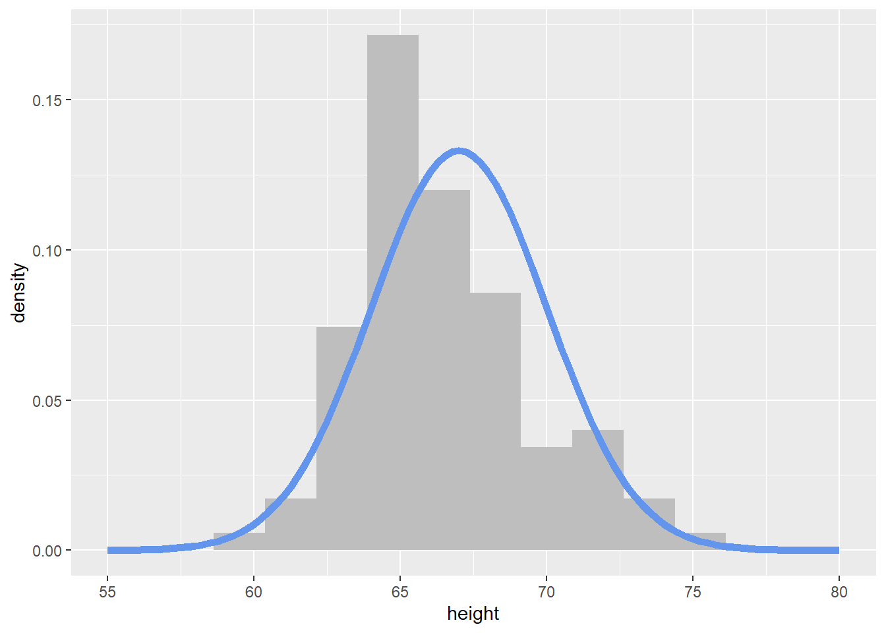

rnorm(1, mean = 0, sd = 1)[1] 0.2807665Welcome to the final week of content! This week you will learn about simulating data in R. By the end of the week you should:
r, p, d, and q functions do when simulating data from different statistical distributionsIn statistics, we often want to simulate data (or create fake data) for a variety of purposes. For example, in your first statistics course, you may have flipped coins to “simulate” a 50-50 chance. This week, we will learn how to simulate data from statistical distributions using R.
Question 1: What does the output of pnorm(-4, mean = 2, sd = 4) mean?
Drawing pictures of the relevant distribution may help.
Question 2: Why does rnorm(mean = 0, sd = 1) give an error?
Question 3: What does map(-2:2, rnorm, n = 5) do?
Question 4: Why does map_chr(-2:2, rnorm, n = 5) result in an error?
Question 5: The output of map(1:5, runif) is a [vector list] with ___ elements. The third element is a [vector / list] with ___ random draw(s) from a Uniform distribution with min = ___ and max = ___.
Functions like rnorm() rely on something called pseudo-randomness. Because computers can never be truly random, complicated processes are implemented to make “random” number generation be so unpredictable as to behave like true randomness.
This means that projects involving simulation are harder to make reproducible. For example, here are two identical lines of code that give different results!
rnorm(1, mean = 0, sd = 1)[1] 0.2807665rnorm(1, mean = 0, sd = 1)[1] -1.222641Fortunately, pseudo-randomness depends on a seed, which is an arbitrary number where the randomizing process starts. Normally, R will choose the seed for you, from a pre-generated vector:
head(.Random.seed)[1] 10403 7 2141451296 -1578102082 333928137 843412603However, you can also choose your own seed using the set.seed() function. This guarantees your results will be consistent across runs (and hopefully computers):
set.seed(1234)
rnorm(1, mean = 0, sd = 1)[1] -1.207066set.seed(1234)
rnorm(1, mean = 0, sd = 1)[1] -1.207066Of course, it doesn’t mean the results will be the same in every subsequent run if you forget or reset the seed in between each line of code!
set.seed(1234)
rnorm(1, mean = 0, sd = 1)[1] -1.207066## Calling rnorm() again without a seed "resets" the seed!
rnorm(1, mean = 0, sd = 1)[1] 0.2774292It is very important to always set a seed at the beginning of a Quarto document that contains any random steps, so that your rendered results are consistent.
Note, though, that this only guarantees your rendered results will be the same if the code has not changed.
Changing up any part of the code will re-randomize everything that comes after it!
When writing up a report which includes results from a random generation process, in order to ensure reproducibility in your document, use `{r}` or `r` to include your output within your written description with inline code.
my_rand <- rnorm(1, mean = 0, sd = 1)
my_rand[1] 1.084441Using `r my_rand` will display the result within my text:
My random number is 1.0844412.
Alternatively, you could have put the rnorm code directly into the inline text `r rnorm(1, mean = 0, sd = 1)`, but this can get messy if you have a result that requires a larger chunk of code.
Here is the code that made one of the plots from the lecture video:
my_samples <- tibble(height = rnorm(n = 100,
mean = 67,
sd = 3)
)
my_samples %>%
ggplot(aes(x = height)) +
geom_histogram(aes(y = ..density..),
binwidth = 1.75, fill = "grey") +
stat_function(fun = ~ dnorm(., mean = 67, sd = 3),
col = "cornflowerblue", lwd = 2) +
xlim(c(55, 80))
Notice how I’m using stat_function() to add a specific function to the plot. Here, I’m using the dnorm() function, with a specified mean and sd.